Núcleo de IA e Ciência de Dados · UFLA
Projetos desenvolvidos pelo NIAD para o UFLA de Portas Abertas 2026. Explore como a IA aprende a jogar, falar e pensar.
Jogue contra uma IA treinada com Monte Carlo Tree Search — o mesmo algoritmo por trás do AlphaGo da DeepMind.
Escolha uma voz sintética e ouça qualquer texto falado em português em tempo real, gerado por uma rede neural.
Enfrente o Stockfish, um dos motores de xadrez mais fortes do mundo. Escolha a dificuldade e veja a avaliação em tempo real.